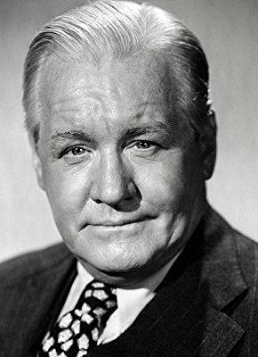

Meine Filme

Darsteller Joseph Crehan
Alle Darsteller
Nr.
Titel
Jahr
FSK
Minuten
Auflösung
IMDB
Meta
Genre
2569
Es geschah in einer Nacht
1934
0
105
720p
8.1 / 10
87
Komödie
11116
Frauenmörder von Paris, Der
1947
16
109
1080p
8.0 / 10
0
Drama
7350
Maske runter!, Die
1952
12
87
1080p
7.2 / 10
0
Drama
8592
Tote schlafen fest
1946
16
113
1080p
8.0 / 10
0
Thriller
9831
Urteil von Nürnberg
1961
12
190
1080p
8.2 / 10
0
Drama